Architecture
I graduated from Bachelor of Architectural Technology and Construction Management. The role of architectural technologist in summary is that of an intermediary between multiple branches: engineers, HVAC engineers, technicians and contractors. I worked as an architect for a year before going for Game Design studies. The main focus I had during my work was on visual programming, mainly creating specific scripts for my team.
This fusion of architecture and scripting allowed my team to save up a lot of time, and sometimes solve design challenges. This technical and artistic way of thinking about constructions and collaborative design, lots of teamwork and communication, taught me many things that I still use to this day.
I believe my architectural skills are useful in gamedev for:
- collaborative design
- being an intermediary between many branches
- thinking of constructions and space in level design
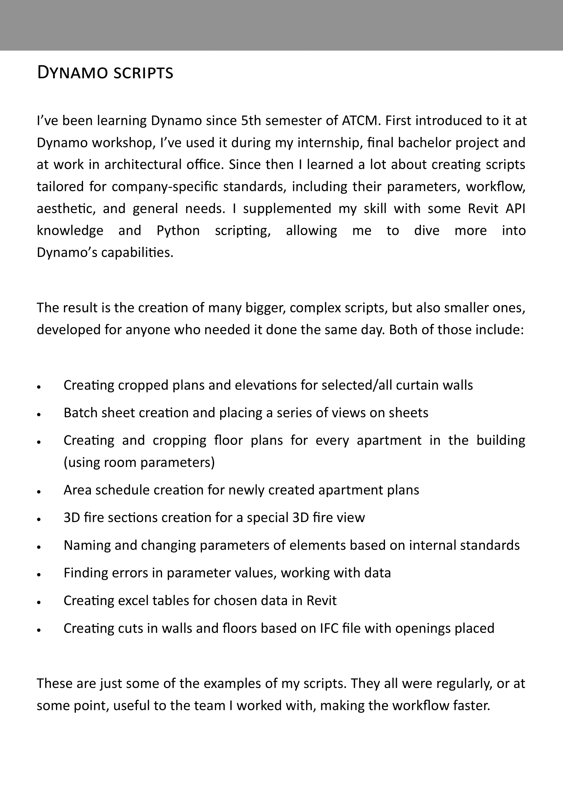
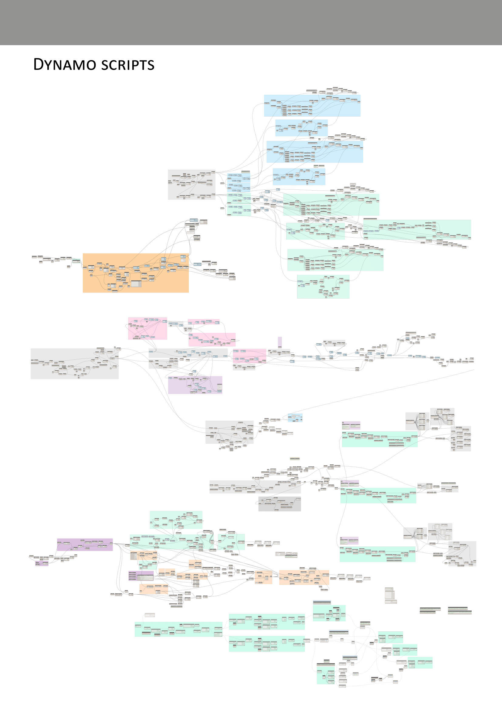
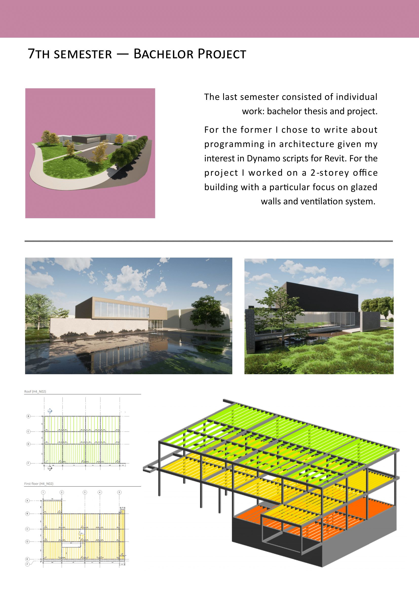
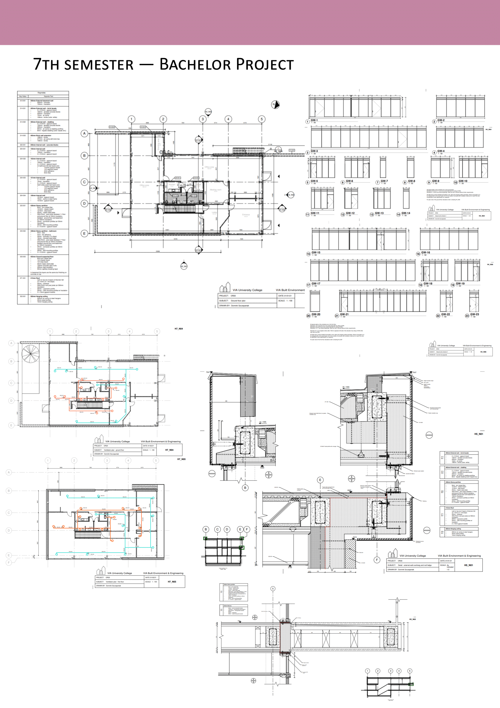
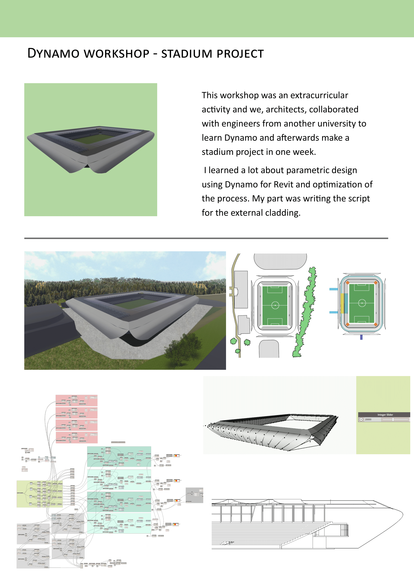
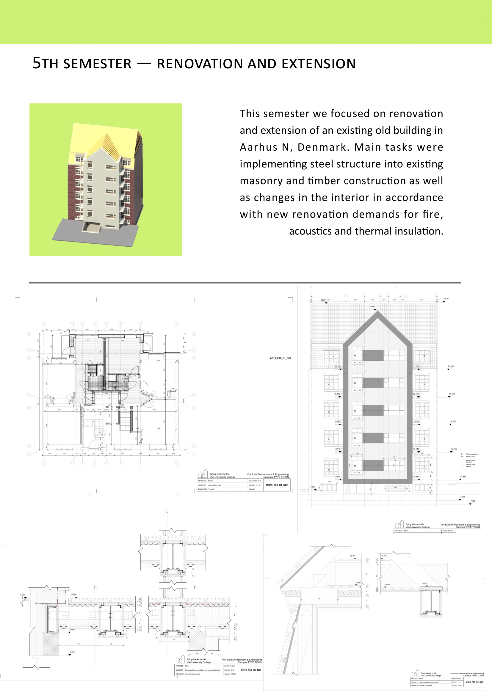
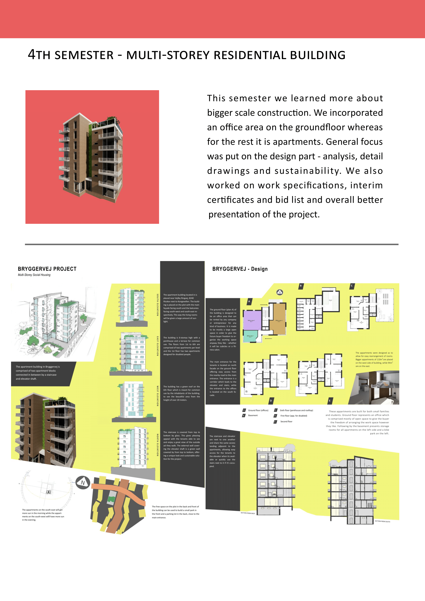
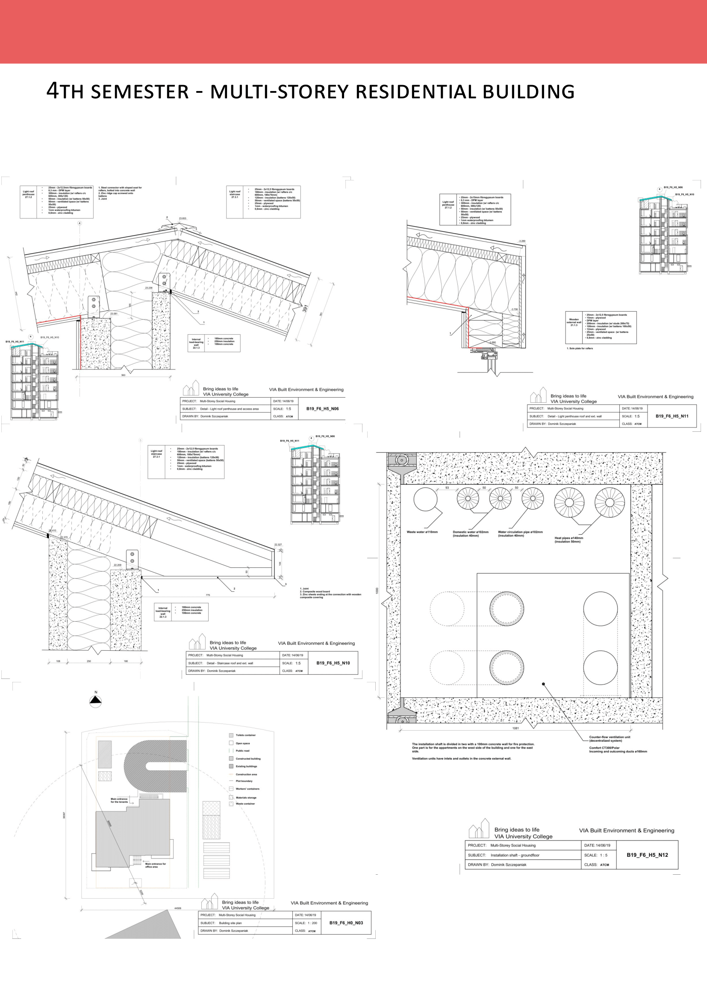
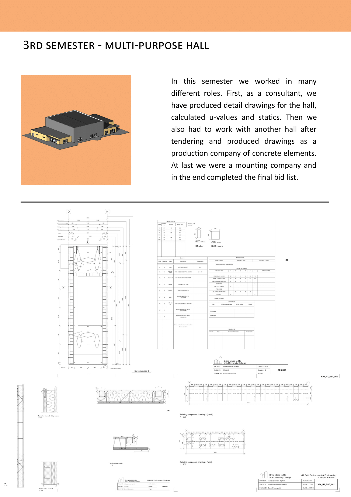
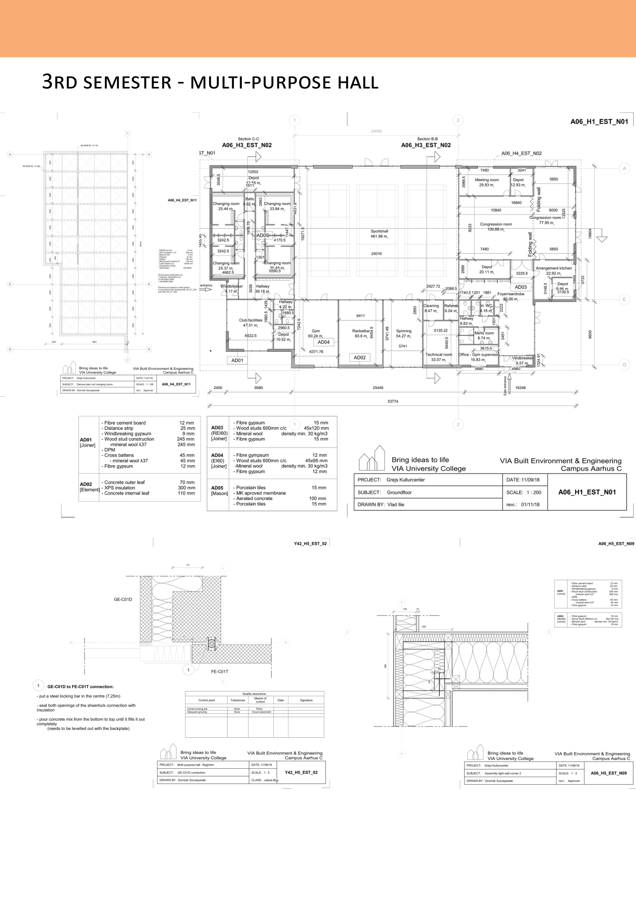
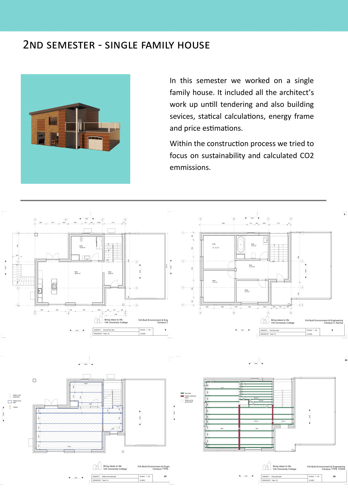
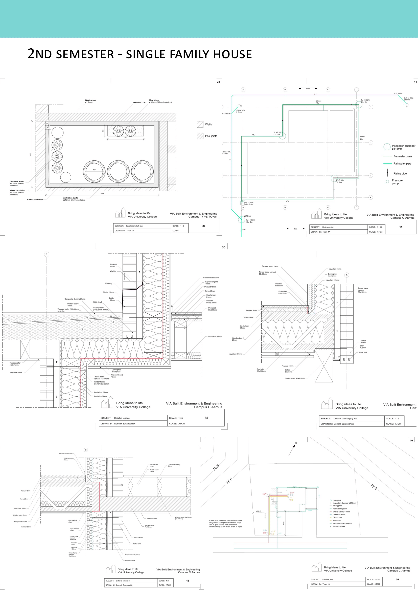
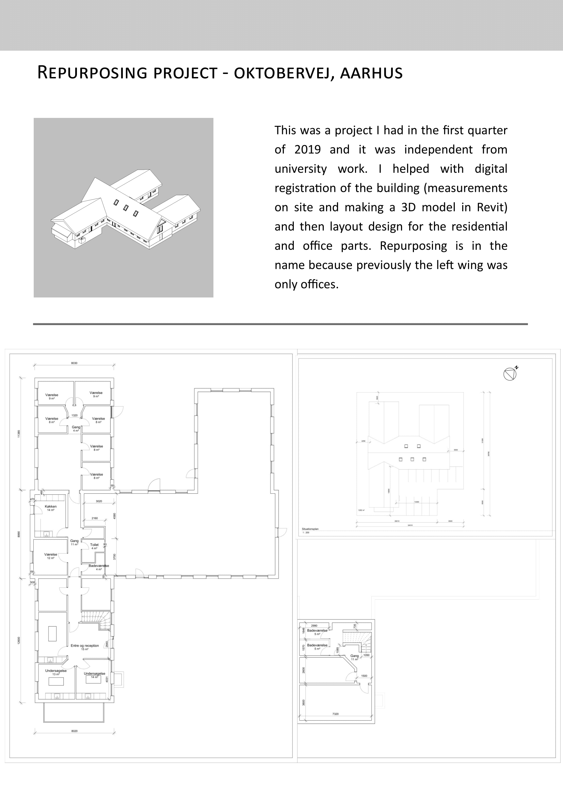